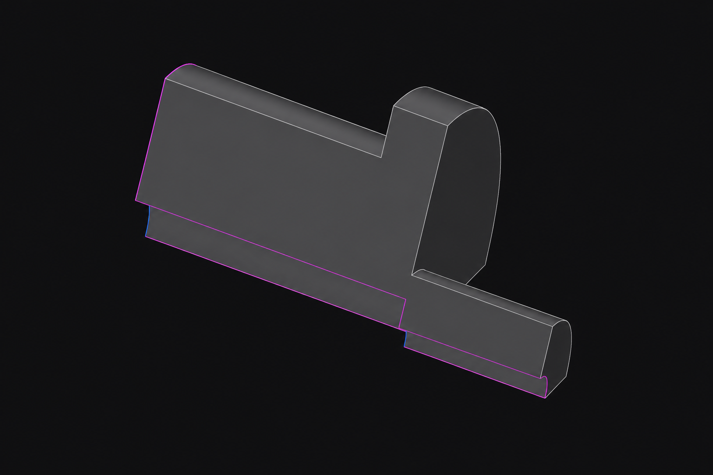
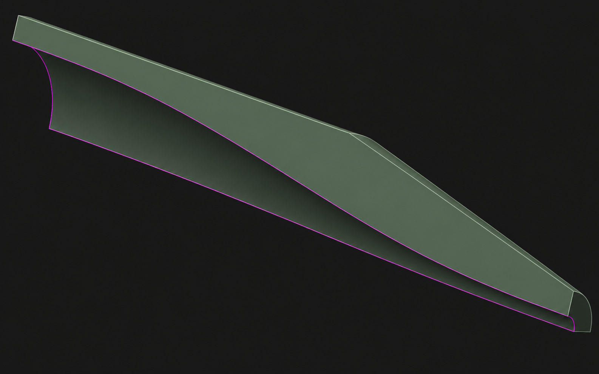

Problem statement
Why the Pulsatorn rig needed this reducer decision.
The Pulsatorn rig is a high-temperature dynamic pressure sensor calibration system used to reproduce gas-turbine-relevant thermal and pressure conditions before sensors are trusted in harsher test environments. The reducer sits between the heater outlet and downstream calibration section, so its geometry affects both pressure delivery and thermal delivery. The legacy reducer was a compact hydraulic fitting with abrupt contractions from 35.05 mm to 11.25 mm and then to 6.0 mm, a geometry expected to create irreversible Borda-Carnot losses, local acceleration and flow non-uniformity. The redesigned reducer used a 150 mm quintic C² contraction from the heater bore to the outlet. The engineering challenge was therefore not simply to make a smoother part, but to decide whether the redesign improves rig performance once compressible flow, heat transfer and practical insulation are interpreted together.
Research question
The technical question answered by the thesis.
How does the redesigned 150 mm quintic C² reducer compare with the legacy two-step fitting in total pressure loss, internal flow regime, external heat loss and downstream temperature under controlled steady-state conditions?
Design logic
From Borda-Carnot loss mechanism to C² contraction.
Geometry comparison — drag to reveal
Legacy two-step vs redesigned C² quintic reducer.
Both geometries connect the same heater bore (35.05 mm) to the same outlet (6.0 mm). The only variable is how the area change is distributed over length.


Methodology
CFD/CHT model structure and why the choices mattered.
Turbulence model
k-omega SST was chosen because the reducer problem combines near-wall sensitivity, adverse pressure-gradient risk and possible separation around abrupt contractions. It retains the near-wall strength of k-omega while blending toward k-epsilon-like behaviour away from the wall, making it more appropriate than a standard k-epsilon model for this confined, accelerating internal flow.
Near-wall strategy
The mesh used inflation layers and y+ monitoring so wall treatment remained consistent across geometries. The goal was not to tune a single local value, but to ensure the boundary layer was represented well enough that pressure loss, wall temperature and heat flux comparisons were not artifacts of near-wall resolution.
Mesh independence
A three-level mesh study compared coarse, baseline and fine grids. The baseline models used 829,621 legacy fluid cells and 913,301 redesigned fluid cells. Monitored quantities included outlet temperature, total pressure drop, maximum Mach number and maximum velocity magnitude. Independence was judged by KPI stability across refinement levels, with baseline-to-fine changes below the 2% engineering threshold.
Simulation campaign
The campaign separated adiabatic flow physics from CHT thermal delivery. Adiabatic cases isolated pressure-loss and Mach-number behaviour across both geometries; six CHT cases then introduced solid conduction and external convection at outlet gauge pressures of 80,000 Pa, 40,000 Pa and 0 Pa while holding inlet conditions and material assumptions consistent.
Boundary conditions
Inlet temperature and pressure were set from rig-relevant operation: 673 K and 100 kPa gauge. Outlet gauge pressure levels represented downstream operating scenarios. Wall conditions separated insulated and uninsulated references, with external convection used to quantify heat rejection from exposed reducer area.
Convergence discipline
For the CHT cases, convergence checks combined solver residuals with simultaneous physical monitors for mass balance, outlet static temperature, external wall temperature and total pressure drop over a rolling 200-iteration interval.
Simulation visuals
From the ANSYS Fluent 2025 R1 campaign: mesh, flow field and solver output.
These are images from the actual thesis simulation campaign. Click any image to enlarge.
Source-verified numerical evidence
CFD and CHT results from the published thesis
Values reproduce Tables 4.2, 4.4, 4.6 and 4.7 of KTH TRITA-ITM-EX 2026:14. These are simulations, not experimental measurements. Cases A, B and C have outlet gauge pressures of 80, 40 and 0 kPa respectively. Hover over a chart for values or use Focus to expand it.
Study 1 · adiabatic CFD
Mesh-sensitivity assessment
Interpretation and limits
All four monitored adiabatic KPIs met the <2% threshold. A separate complete CHT mesh-independence study was not performed; CHT uses corrected near-wall meshes.
Study 2 · standard CHT
Total pressure loss and peak Mach
Interpretation and limits
At Case C, the redesigned outlet approached sonic flow; the legacy reducer showed a local supersonic vena-contracta pocket. Despite smoother internal flow, the redesigned part had higher total pressure drop across all cases.
Study 2 · uninsulated CHT
Heat loss and downstream gas temperature
Interpretation and limits
The redesigned reducer had lower heat flux per unit exposed area but approximately three times more total heat loss under the imposed uninsulated convection condition. Thermal radiation was omitted.
Thermal comparisons
External flux and ideal insulation reference
Interpretation and limits
The insulated reference sets external heat flux to zero; it is not a measured insulation assembly. Real radiation, insulation thickness and calibration response remain unvalidated.
Principal results
Flow and heat-transfer trade-offs
The smooth reducer approached sonic flow at the geometric outlet (Ma = 0.990). The legacy reducer formed a localized supersonic vena-contracta pocket (Ma = 1.006). The redesigned geometry nevertheless produced 2.3–3.8% higher total pressure loss in the standard CHT cases.
Although the redesign reduced external heat flux per unit surface area by 9.5–14.3%, its 3.35× larger exposed area produced about three times the total external heat loss when uninsulated.
In uninsulated Case C the legacy reducer delivered 3.36 K warmer gas. In the ideal zero-external-flux reference the redesign delivered 1.24 K warmer gas. Neither transient pulsations nor sensor-calibration accuracy were simulated.
Laboratory work
Preliminary instrumentation and heater troubleshooting
Prior to the numerical work, I modified existing LabVIEW measurement VIs, developed additional acquisition routines, and carried out preliminary commissioning checks with NI-DAQ, thermocouples and pressure-transducer instrumentation on the Pulsatorn rig. This work was separate from the planned high-temperature validation campaign, which was not completed.
Following an inline-heater failure, I carried out root-cause troubleshooting with technical guidance from industrial supervisor Jonas Deurell. Siemens Energy and KTH approved a revised thesis scope focused on comparative steady-state numerical modelling. The published thesis documents the hardware failure and scope revision in Appendix E; detailed commissioning activities are described here from my own industrial placement experience.
Engineering interpretation
Design implications under the simulated conditions
The quintic contraction produced a more uniform near-choked outlet flow regime, but not a total-pressure-loss improvement. Its greater exposed area also increased total convective heat loss under the uninsulated boundary condition. The ideal insulated reference suggests that controlling external heat loss could change the thermal comparison.
The numerical study therefore supports further evaluation of the geometry with insulation, not unconditional adoption of a new reducer. Thermal radiation, a practical insulation configuration, dynamic rig operation and experimental testing must be addressed before the design can be qualified for calibration work.
Limitations and future work
Numerical limitations and future experimental work
Steady-state assumption
The model does not capture pulsating operation, thermal inertia, unsteady boundary-layer response or transient sensor-environment coupling. These are central to the real Pulsatorn operating context.
Simplified boundary conditions
Constant inlet conditions and idealized wall treatments simplify rig transients, heater behaviour, startup conditions and real insulation details.
Validation gap
The redesigned reducer was not manufactured or experimentally validated. A repaired heater chain, reliable temperature and pressure measurements and controlled validation conditions would be needed to test the simulated findings.
Next investigation
The published thesis identifies higher-fidelity thermal radiation, full-CHT mesh sensitivity, unsteady near-choked flow and parametric optimisation of the quintic geometry as next research steps.
These extensions remain future research. The completed thesis is a steady-state numerical comparison of two reducer geometries, not an experimental rig-validation study.